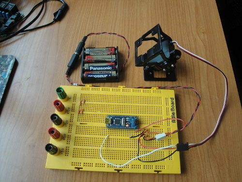

He comenzado a portar el software de micro-osciladores al micro ATmega168 de atmel. Hasta ahora lo tenía sólo para los PIC16F876A. Para las pruebas iniciales he usado un arduino nano, una protoboard, un módulo MY1 y cuatro pilas AA. En este vídeo podéis ver al módulo oscilar:

Las fuentes del programa están disponibles en este repositorio.
Aunque todavía queda mucho por mejorar, cualquiera que tenga un Arduino o una placa con un micro ATmega podrá implementar la locomoción de robots modulares de manera muy fácil. ¡Pruébalo! 😉
Juan, veo que por fin has visto la luz y utilizas los AVR!!!!! Tu vida no va a ser la misma a partir de ahora 😉
Saludos,
Isaac
Hola Isaac!
He sido atraído por el lado oscuro del GCC… 🙂
Programar micros de 8 bit con el GCC es alucinante!!!!